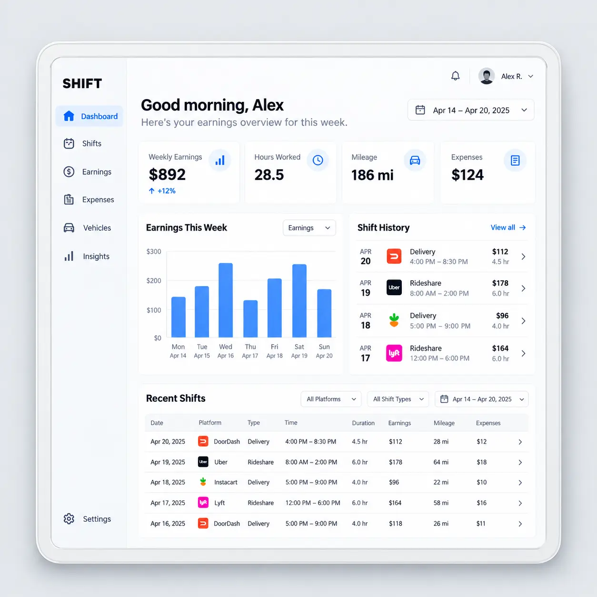
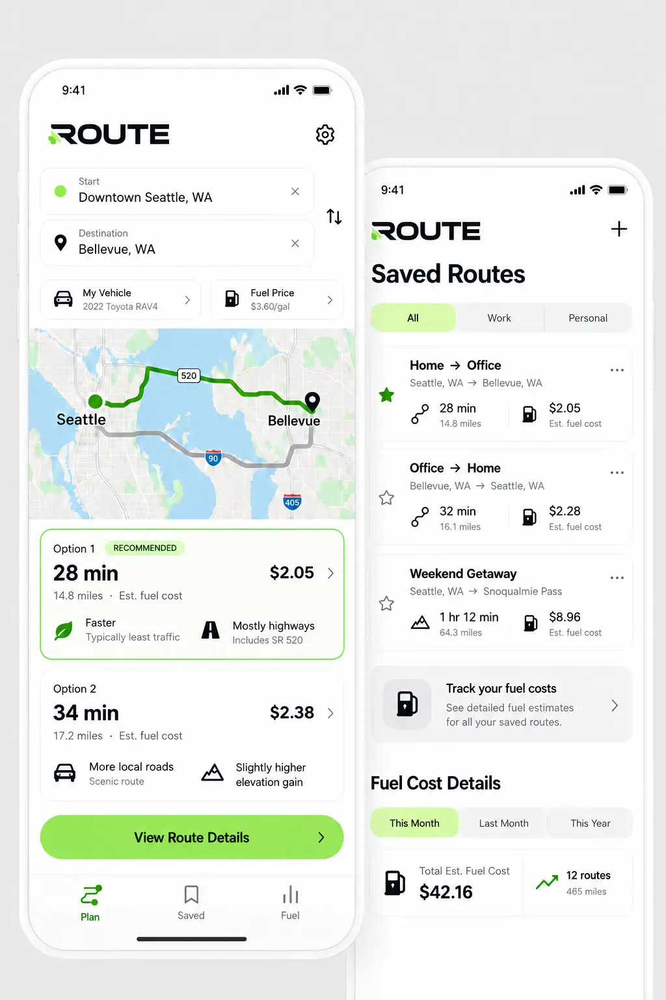
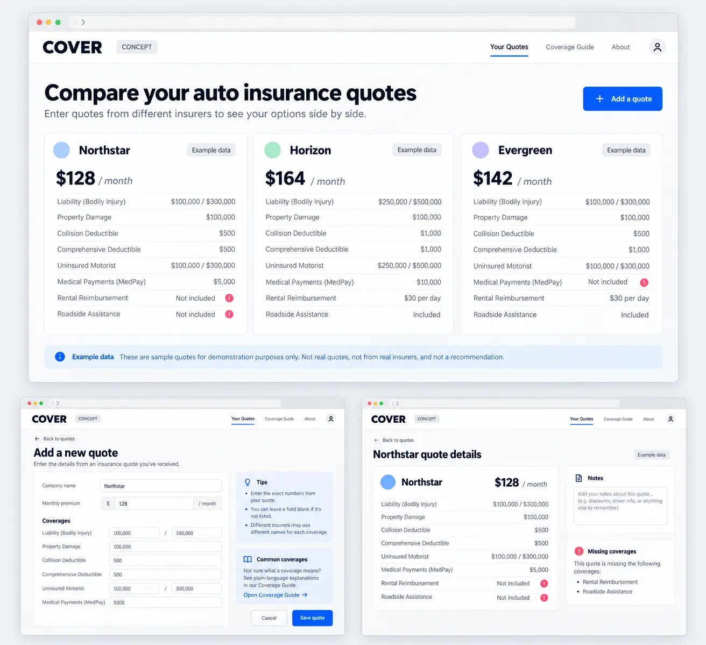
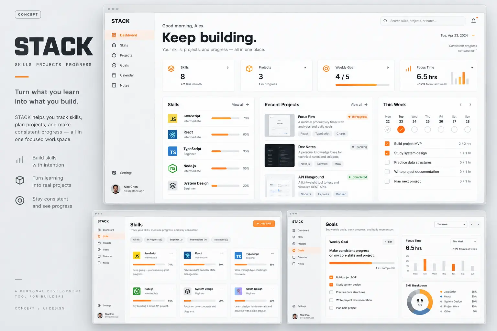
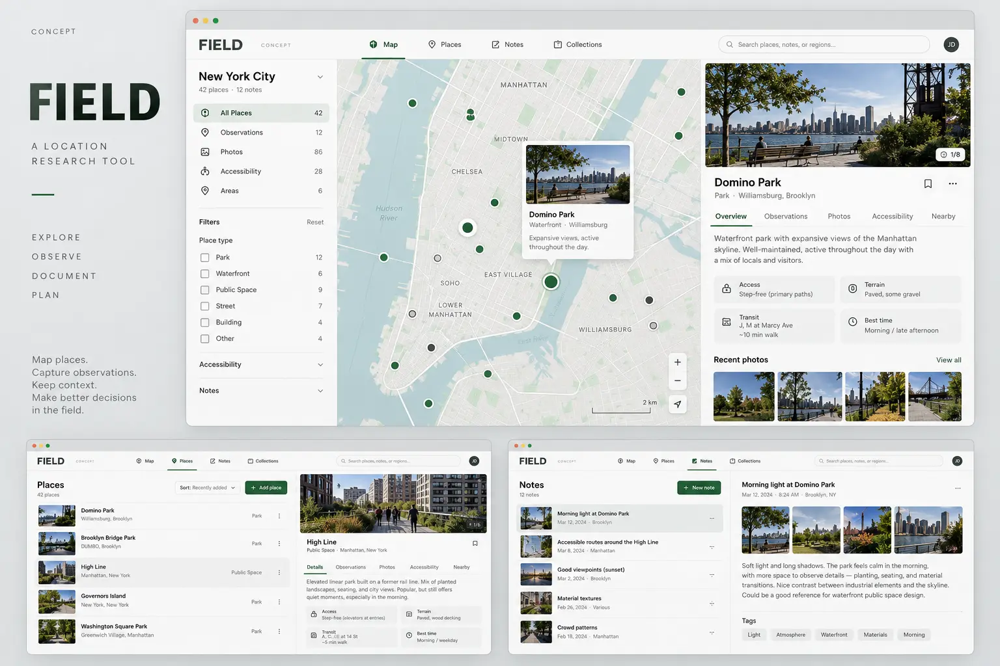
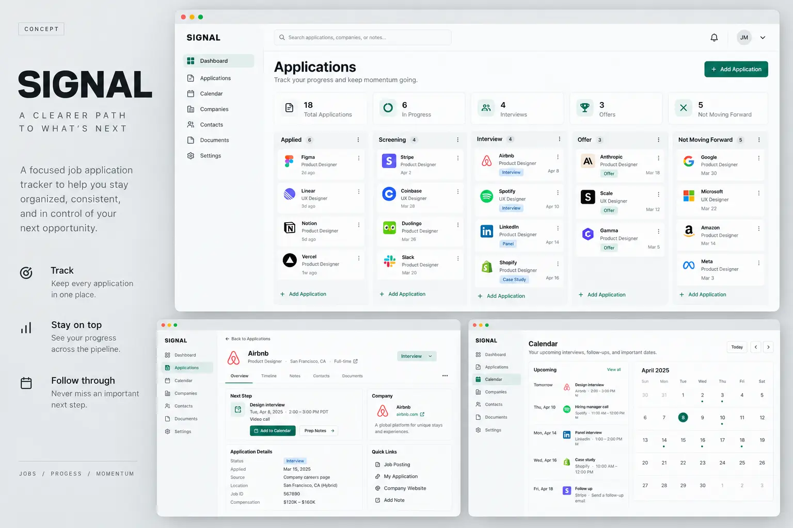

PRODUCT DESIGN / EARLY DIRECTIONS
Ideas in progress
Six early web apps to explore and test.
These first versions are working browser-based tools. They have not yet been validated through user testing.

Try the working first version →
EARLY WEB APP / WORK & EARNINGS
SHIFT — Make sense of every shift.
A dashboard for gig workers to log shifts, mileage, expenses, and earnings in one place.
- First version
- Log a shift and review earnings per hour, miles, and estimated expenses.
- What to test
- Can users compare their shifts and understand which ones fit their goals?

Try the working first version →
EARLY WEB APP / TRAVEL & COST
ROUTE — Find a route that fits.
A planning tool for comparing recurring trips by distance, travel time, and estimated fuel cost.
- First version
- Save routes and enter distance, time, and fuel assumptions for a side-by-side comparison.
- What to test
- Can users identify the route that best fits their priorities?

Try the working first version →
EARLY WEB APP / INSURANCE
COVER — Compare the details that matter.
An analytical direction for Cover Compass that highlights differences and missing information across auto insurance quotes.
- First version
- Enter quotes manually and compare premiums, coverage limits, and deductibles.
- What to test
- Can users notice a meaningful coverage difference before choosing?

Try the working first version →
EARLY WEB APP / SKILLS & PROJECTS
STACK — Turn progress into practice.
A workspace for tracking skills, connecting them to projects, and choosing a clear next step.
- First version
- Add skills and projects, connect them, and set a weekly goal.
- What to test
- Can users decide what to work on next without feeling overwhelmed?

Try the working first version →
EARLY WEB APP / LOCATION RESEARCH
FIELD — Collect what you notice.
A location research tool for saving photos, observations, and accessibility notes about places.
- First version
- Save a place with a photo and notes, and filter entries by category.
- What to test
- Can users quickly retrieve an observation they saved earlier?

Try the working first version →
EARLY WEB APP / JOB SEARCH
SIGNAL — Know what needs attention.
A structured dashboard for tracking job applications, contacts, deadlines, and follow-ups.
- First version
- Add an application, update its stage, and review upcoming follow-ups.
- What to test
- Can users identify which applications need attention and what to do next?